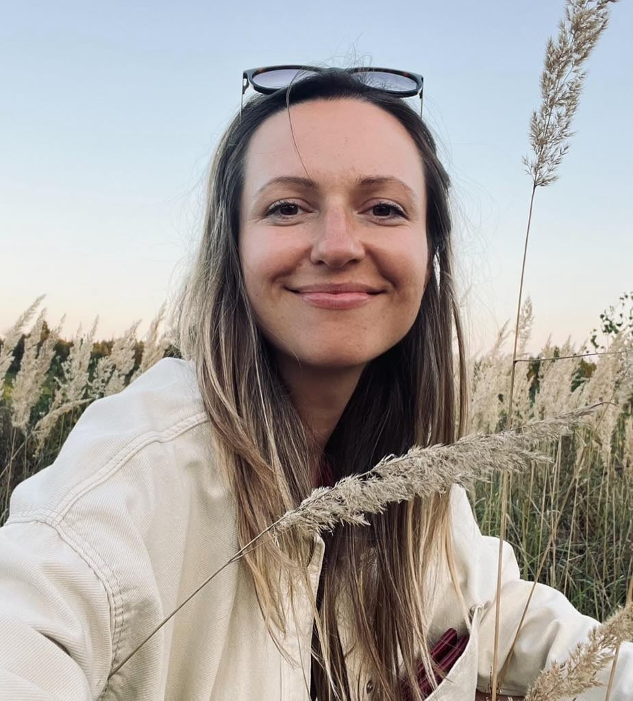

Telefonas
+370 60292561El. paštas
psichologeliana@gmail.com
Esu vaikų ir paauglių psichologė dirbanti dešimt metų su vaikais švietimo srityje. Jaučiu didelę prasmę dirbdama su vaikais, paaugliais ir jų šeimomis, nes tikiu ankstyvosios pagalbos svarba. Kai sunkumai pastebimi ir sprendžiami kuo anksčiau, vaikui atsiveria daugiau galimybių sėkmingai vystytis – geriau suprasti save, kurti ryšius su kitais, lengviau mokytis, siekti savo tikslų ir pasitikėti savimi bei aplinka.
Konsultacijose siekiu sukurti saugią ir palaikančią erdvę, kurioje vaikas galėtų savo tempu atskleisti ir tyrinėti savo jausmus bei patirtis. Geriau pažindamas save, vaikas gali jaustis tvirčiau, labiau pasitikėti savimi ir kurti artimesnius santykius su kitais. Gydančią santykio galią patiriu ir savo asmeninėje psichoterapijoje, ir kasdien dirbdama su vaikais bei jų šeimomis. Kartais jau pats patyrimas būti išgirstam, priimtam ir suprastam gali tapti svarbiu žingsniu pokyčių link.
Pirmųjų susitikimų metu siekiame geriau suprasti sunkumus, dėl kurių kreipiamasi. Dažniausiai susitinku su tėvais, o taip pat skiriame kelis susitikimus su vaiku ar paaugliu. Šis etapas padeda geriau pažinti vaiko situaciją, jo patiriamus išgyvenimus bei nuspręsti, kokia pagalba galėtų būti naudingiausia.
Konsultacijų metu vaikai gali žaisti, piešti, kalbėtis ar užsiimti kitomis jiems natūraliomis veiklomis. Per šias veiklas jie išreiškia savo patirtis, jausmus ir vidinius išgyvenimus. Mažesniems vaikams pagrindinė raiškos forma dažnai yra žaidimas. Vaikui augant vis svarbesnis tampa pokalbis ir refleksija. Konsultacijose siekiama sukurti saugią erdvę, kurioje vaikas gali būti priimtas su visais savo jausmais ir patirtimis.
Tėvų ar globėjų dalyvavimas yra svarbi pagalbos proceso dalis. Reguliarūs susitikimai su tėvais padeda geriau suprasti vaiko situaciją, aptarti jo raidą, santykius bei ieškoti būdų, kaip tėvai galėtų palaikyti vaiką kasdienybėje, stiprinti tarpusavio ryšį ir kurti saugesnę emocinę aplinką. Vaiko konsultacijos dažniausiai vyksta kartą per savaitę, o susitikimai su tėvais organizuojami periodiškai, atsižvelgiant į vaiko amžių ir situacijos poreikius.
Pagalbos trukmė priklauso nuo vaiko patiriamų sunkumų pobūdžio, jų trukmės ir individualios situacijos. Kartais pakanka kelių konsultacijų ar trumpesnio konsultavimo laikotarpio, kai sprendžiami konkretūs klausimai ar sunkumai. Kitais atvejais gali būti naudinga ilgesnė psichoterapija, kuri leidžia giliau tyrinėti vaiko patirtis ir kurti tvaresnius vidinius pokyčius.
Šiuo metu dirbu psichologe ikimokyklinio ugdymo įstaigose bei konsultuoju privačioje praktikoje.
2018–2025 m. savanoriavau „Jaunimo linijoje“, teikdama emocinę paramą.
2021–2025 m. vedžiau emocinio raštingumo užsiėmimus vaikams („Laimės pamokos“) mokykloje ir sostinės ir vaikų jaunimo centre.
Vedu smurto prieš vaikus prevencijos programą „Esame saugūs“.
Lietuvos psichologų sąjungos narė.